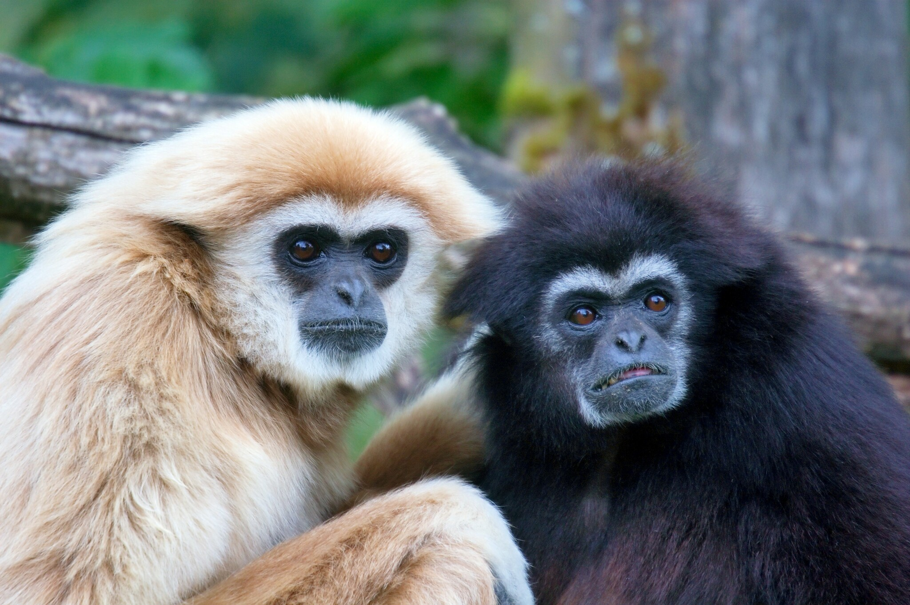
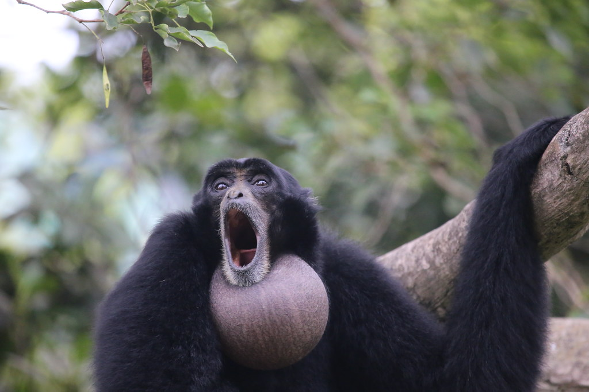
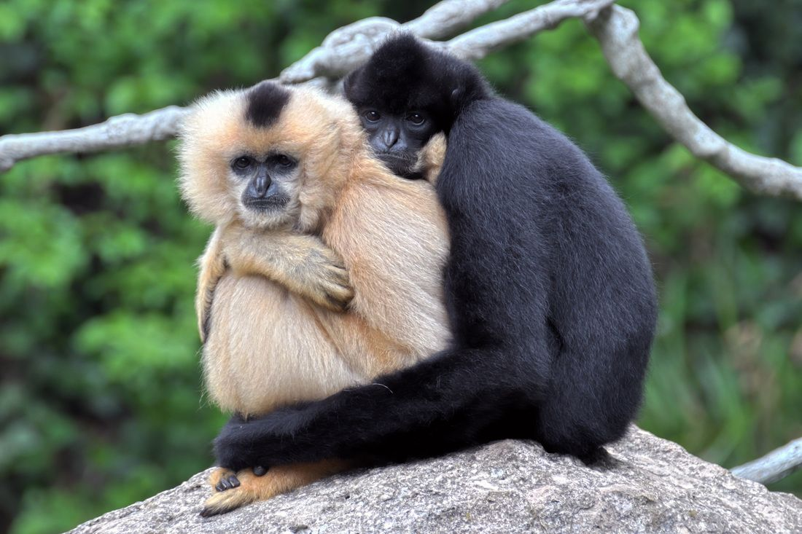

Lesser apes belong to the family Hylobatidae, which includes several genera and species.
Lesser apes are known for their distinctive brachiation locomotion, social structures, and vocalizations.
They're mostly found in the forests of Southeast Asia. They are normally refered to as Gibbons.
Hylobates
Hylobates is a genus of small apes. and are known for their distinctive vocalizations, which are often referred to as "songs."
They are typically monogamous and live in small family groups. Gibbons play an important role in their ecosystems as seed dispersers.

Symphalangus
Symphalangus is a genus of gibbons, commonly known as siamangs.
siamangs are notable for their larger size compared to other gibbons and their distinctive throat sac, which enables them to produce deep, resonant calls.
Unfortunately, they are threatened by habitat loss and illegal hunting, leading to declining populations.

Nomascus
Nomascus is a genus of gibbons known as the crested gibbons, known for their striking fur, which often features a distinctive crest on their heads.
Nomascus species are smaller than siamangs and exhibit sexual dimorphism, with males typically having darker fur than females.
Like other gibbons, Nomascus species are primarily frugivorous and depend on forest habitats, making them vulnerable to threats such as habitat destruction and poaching.

Many gibbon species are endangered due to habitat destruction, deforestation, and hunting as well as the pet trade all poses a significant threat.